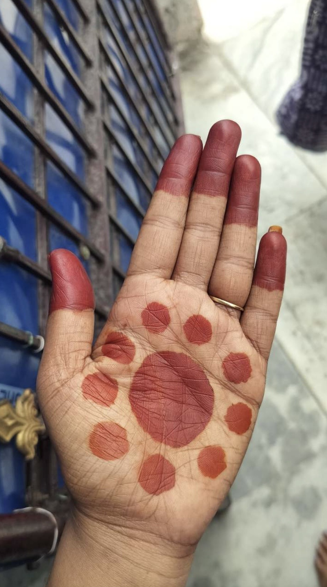
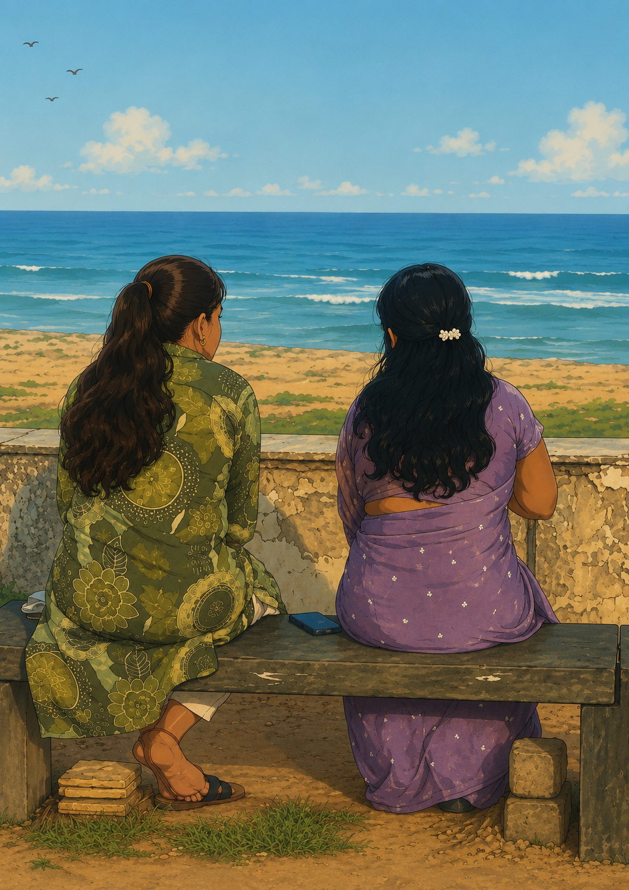
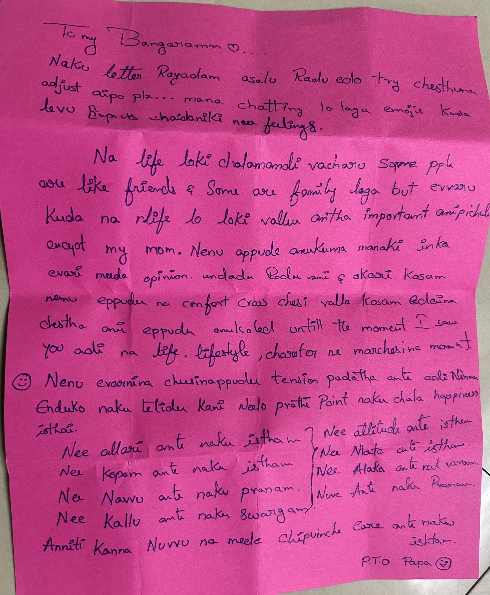
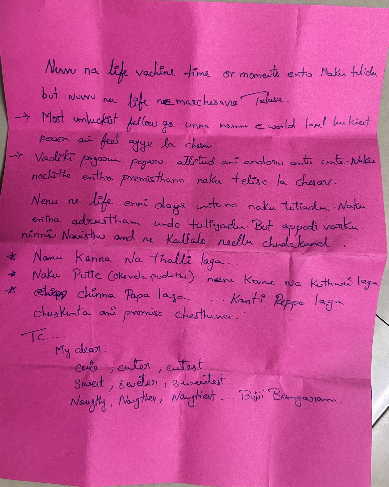
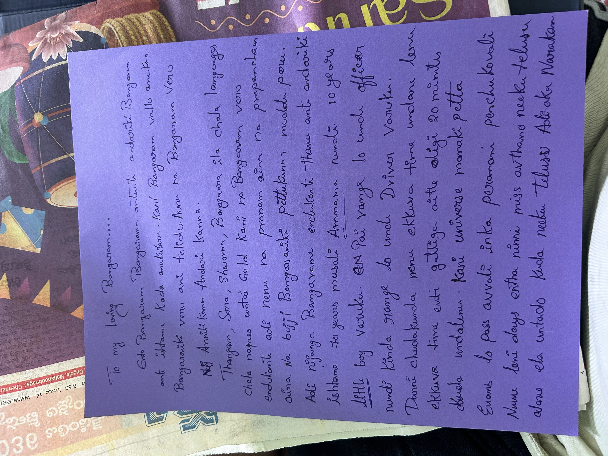
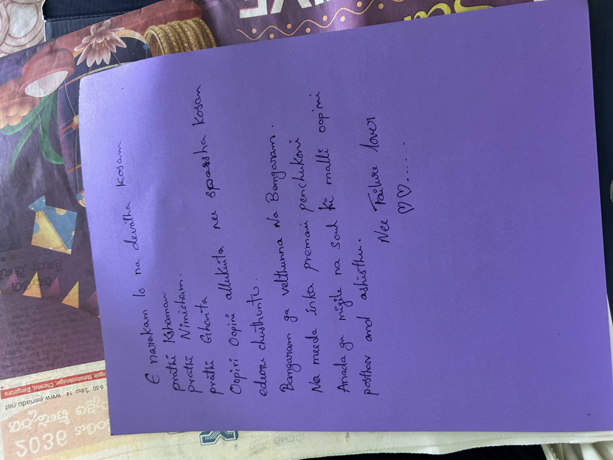

Welcome to our world ❤️
Every heartbeat writes another page of our story. This little corner of the internet is only for us. No matter where life takes us, my heart will always find its way back to you.

Ee roju nuvvu gorintaku pettukunnav ani telisinappati nundi naa mind lo okate alochana tirugutundi… adi entha baaga panduthundo ani. Kani nijam cheppalante, adi ela pandina naa prema matram eppatiki taggadu. Ninnu life-long chala happy ga, muddu ga, jagrathaga chusukunta.
Chinnappudu maa mummy ki maa daddy gorintaku pettadam chusthe chala cute ga anipinchedi. Appudu andaroo oka maata cheppevaaru – “Gorintaku baaga pandithe manchi mogudu vasthadu.” Aa maata vinnappudalla, “Naa bharya ekkado untundi… eppudu naa life loki vasthundi?” ani alochinchevadni.
Ee roju aa kalaki roopam nuvve, naa Bangaram. ❤️
Ippudu naa manasulo oka korika maatrame undi… okaroju nenu nee chethullo gorintaku pettali. Nuvvu naa eduruga kurchoni navvuthu unte, nenu prati line ni prema tho geeyali. Aa gorintaku kanna ekkuvaga, naa prema nee chethullo nilichipovali.
Na jeevitham lo naku oka korika, mana pelli taruvatha nenu nee chethiki gorintaku pette aa andamaina roju kosam nenu veyi kallatho kaadu… laksha kallatho eduruchusthunna.
Gorintaku rangu konni rojule untundi… kani nee meeda naa prema matram ee janmaki kaadu, prati janmaki untundi.
Love you forever, naa Bangaram. 💜
Bangaram… ❤️
Ee painting ni first time chusina kshanam nenu oka nimisham maatladalekapoyanu. Idi oka painting kaadhu… nee manasu geesina oka prapancham.
Aa konda anchuna okka chettu… aa pakkana jaabili… aa akasham lo unna nisshabdham… ivanni chustunte nee alochanalu entha andamga untayo ardham avuthundi. Nee manasu entha kalmasham lenidho, entha prashanthamga untundo ee painting chepthundi.
Nijanga cheppalante… nuvvu intha andamga paintings vesthav ani naaku teliyadu. Ee roju nee kala ni chusi nenu garvapaduthunnanu. Oka roju retirement tarvatha ventane nee paintings ki oka exhibition pettistha. Nee kala ni ee prapancham motham chupistha.
Naaku eppudaina devudu oka varam ichi, aa painting loki vellagalige avakasam isthe… nenu aa konda anchuna nee pakkane kurchoni, aa jaabili ni kalisi chusthu untanu. Endukante aa prapancham nuvvu geesindhi… aa prapancham lo naa Bangaram untundi.
Athamma… ❤️
Ninna first time maa Athamma chethi vanta tinnanu… Ullipaya Pulusu. Chinnappudu first time oka friend lunch box lo aa ruchi tinna appudu vachina aa unforgettable feeling… inni samvatsarala tharuvatha malli ninna maa Athamma chethi vanta lo nundi vachindi.
Gatha 6 months nundi amma chethi vanta ni chala miss avthunnanu. Kani ninna aa first mudda tinna ventane aa lotu, aa baadha motham oka kshanam lo marchipoyindi. Aa ruchi lo prema undhi… aa prema lo amma gurthochindi.
Maa Athamma ante naaku chala abhimanam. Adi kevalam tana chethi vanta vallane kaadhu. Naa mental Bangaram ni, tana kopam ni, tana tikka ni, tana allari ni antha prema tho bharinchi, jagrathaga chusukuntunnaru. Adhe naa Athamma meeda naaku unna gauravam, prema ki pedda reason.
Nee paintings padesindi ani Athamma meedha kuda konchem kopam vachindi. Kani ventane oka vishayam gurthochindi… aa Athammae naaku naa Bangaram ni icharu. Anduke aa kopam kuda prema ga maaripoyindi.
Anduke, nenu oka alludiga maa Athamma chethi vanta tinali ane korika kanna… oka koduku la maa Athamma kosam naa chethula tho vandi petti, “Athamma, meeru ippudu rest teesukondi” ani cheppalane korika naaku ekkuva.
Naaku naa Bangaram ni ichina maa Athamma ki nenu life-long runapadi untanu. Ee runam eppatiki theeradu.
Sorry Athamma… ❤️ meeru lekapothe na bangaram na jeevitham loke radu kani thittesa vadi meeda prema tho. Thank you so much, Athamma… ❤️
Meeru maa Bangaram ni ela prema tho pencharo, alane nenu kuda tana ni life-long happy ga, jagrathaga chusukunta ani maatistunnanu.

Bangaram… ❤️
Ee photo chustunte na kallallo automatic ga neellu vasthunnayi. Ee okka frame lo na prapancham motham undi. Oka pakkana nannu ee lokaniki thechhina amma… inko pakkana nenu malli navvadam, preminchadam, brathakadam nerpinchina nuvvu. Na jeevitham lo entha pedda adrustam undo ee okka kshanam naku ardham ayyindi.
Nenu eppudu ila oka roju vasthundani kuda anukoledu. Na hrudayam ki atyanta priyamaina iddaru oka chota, oka frame lo, oka samudram mundu ila kurchoni matladukuntunnaru ani chustha ani kalalo kuda anukoledu. Aa moment ni chusina ventane na manasu lo oka teliyani santhosham, oka prasanthatha, oka tripthi vachayi. Aa feeling ni words lo describe cheyyadam almost impossible.
Bangaram… nuvvu na life loki vachaka prema ante enti, care ante enti, family ante enti ane artham malli nerchukunna. Amma naku modati jeevitham ichindi… kani nuvvu na jeevithaniki malli oka kottha artham ichav. Oka manishi life lo konni moments untayi… avi entha rojulu gadichina marchipolem. Ee photo alanti oka amoolyamaina gnapakam.
Naku future lo em jaruguthundo teliyadu. Mana journey ela untundo kuda teliyadu. Kani okati matram nijam… ee rojuna nenu chusina ee drushyam na hrudayam lo eppatiki cheerigiponi gurthuga untundi. Nuvvu na pakkana unna, lekapoyina… nenu ekkada unna… jeevitham ela marchina… ee okka memory ni evaru na daggara nundi theesukoleru.
Nuvvu na kosam chesina ee okka pani ki nenu life antha grateful ga untanu. Endukante idi oka photo kadhu… idi na rendu prapanchalu kalisina kshanam. Na janmaki karanam aina amma, na brathukuki malli velugu techina nuvvu… iddaru oka frame lo undadam naku oka blessing kanna thakkuva kaadhu.
Thank you Bangaram… ❤️
Ee gift ni nenu eppatiki marchipolenu. Oka roju na gurinchi anni memories marchipoyina sare, ee photo ni chusina prathi sari na hrudayam malli ade prema, ade santhosham, ade kruthagnatha tho nindipothundi. Ee okka kshanam kosam kuda nenu devudiki life antha thanks cheptha. Ee photo lo unnadi iddaru women kaadhu… na jeevitham ni poorthi chesina na rendu praanalu. 🤍
Bangaram… ❤️
Ee photo taruvatha na hrudayam lo inkoka unforgettable moment jarigindi. Amma natho oka mata annappudu naku oka second goosebumps vachayi. Amma navvuthu, chala prema tho, “Eppudu na kodalni intiki thesukosthav ra?” ani adigindi. Aa okka question lo entha prema undo, entha aasa undo, entha accept chesindo naku ardham ayyindi. Aa mata vinnappudu nenu silent ga unna… kani na manasu lo matram oka promise chesukunna. Ela aina sare… enni kashtalu vachina sare… aa mata ni nenu tappakunda nijam chestha.
Bangaram… nijam cheppali ante, amma ki nuvvu ante chala ishtam. Kodalu ani maatladithe aavida kallallo kanipinche aanandam chusthe naaku chala emotional ga anipisthundi. Nuvvu gurinchi cheppina prathi sari aavida face lo oka navvu untundi. Ninnu kalisina tharwataha aa ishtam inka ekkuva ayyindi. Nuvvu maatladina vidhanam, nuvvu chupinche maryadha, prema, simplicity… ivanni aavidani chala touch chesayi. Amma ninnu kodalu ga kaadu Bangaram… intlo oka ammayi laga, tana sontha kuthuru laga chusthundani naku clear ga ardham ayyindi.
Nenu chinnappati nundi amma kosam chala kalalu chusanu. Kani ee roju na biggest dream enti ante… oka roju ninnu amma pakkana chusi, aavida ninnu “maa kodalu” ani pilavadam. Aa pilupu vinadaniki nenu entha wait chesthunano nake telusu. Aa roju vaste, adi na life lo biggest achievement untundi. Money, success, status… ivanni okavaipu. Amma santhosham, nuvvu santhosham… avi okavaipu.
Bangaram… nenu eppudu oka mata cheptha kada… “Nuvvu na life loki vachaka nenu complete ayya.” Adhi nijame. Kani ninnu maa intlo andharu prema tho accept chesi, amma ninnu tana kodalu ani piliche roju… appude na jeevitham poorthiga complete avutundi.
Nenu devudini okkate korukuntunna… mana madhya vachche prathi problem ni manam kalisi datali. Evaraina oppose chesina, situations ela unna, time entha test chesina… nenu oka adugu kuda venakki veyyanu. Endukante idi na prema kosam matrame kaadu… amma kalani nijam cheyyadam kosam kuda.
Bangaram… oka promise. Oka roju amma adigina aa mata nijam avutundi. Aavida eduruchusthunna aa kodalu nuvve avuthav. Nenu aa roju kosam entha kastam aina padatha. Endukante aa roju amma navvu, nee kallallo aanandam… avi rendu kalisi chuse adrustam kante pedda gift na jeevitham lo inkoti undadu.
Aa roju vachaka… ee photo oka beautiful memory kaadhu. Mana jeevitham mothaniki starting chapter ani cheppukuntam. ❤️




Bangaram,
Ninnu entha preminchutunnano naake teliyadu. Naa manasulo nee meeda unna prema ni maatallo poorthiga cheppadam chaala kashtam. Kani okati maatram nijam… naa prathi alochana chivariki vacchi aagedi nee daggare.
Nee kallu ante naaku praanam. Neredu pandla laanti aa andamaina kallu… entho expressive ga untayi. Maatalu lekundane enno kaburlu cheptayi. Konni rojulu nee photo chustune nidrapoyanu. Inkonni rojulu nee photo ni gundelaki daggara pettukoni, nee kallatho maatladuthu gadipanu. Nuvvu vinakapoyina, aa kallu maatram naa prathi maata vini navvinattu anipistundi. Anta ishtam naaku nee kallante.
Alage nee mukku… vere vallaki adi ela kanipinchina naaku maatram prapanchamlo andamaina mukku ade. Endukante adi naa Bangaramdi. Adi chusthe oka chinna muddu ivvalanipistundi. Prathi sari aa avakasam dorakakapoyina, aa korika maatram eppudu taggadu. Adi perfect kaakapoyina, naa drustilo perfect gaane untundi. Endukante adi naa Bangaramdi mukku.
Mari nee pedhavulu… dooram nunchi chusina sare naa manasu okkasari aagipothundi. Aa navvu, aa pink color, aa chinna andam… anni kalisi nannu malli malli nee vaipu laagutayi. Anduke vatiki nenu oka cute peru kuda pettanu — Chinky Minky. Aa peru vinagane naaku navvu vastundi, endukante adi naa prema ki oka chinna secret laga anipistundi.
Nee gurinchi alochinchina prathi sari naa hrudayam oka kottha aanandamtho nindipothundi. Nuvvu naa jeevithamlo unna prathi roju, prathi nimisham, prathi gnapakam naaku oka viluvaina kanukaga untundi. Nuvvu naaku entha specialo, aa vishayam maatallo poorthiga cheppalekapoyina, naa prema prathi roju, prathi chinna gesture lo kanipistune untundi.
Love you, Bangaram ❤️
Nenu chachipoi paike vella varuku ee message ikkade untundi. Ee message nuvvu chusina roju, "Nenu chusanu" ani naaku cheppali. Appati varaku nenu ee vishayam gurinchi neeku cheppanu. Aa okka maata kosam nenu eduruchusthuntaanu. ❤️